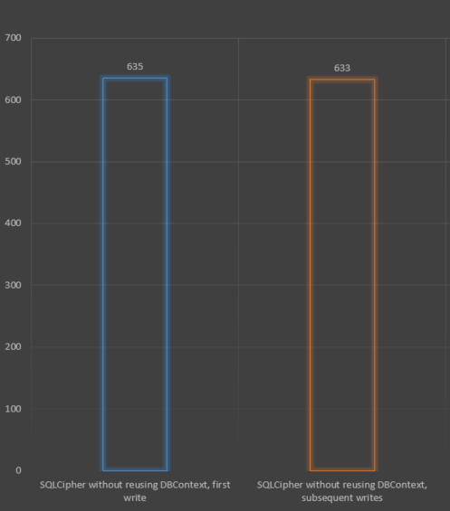
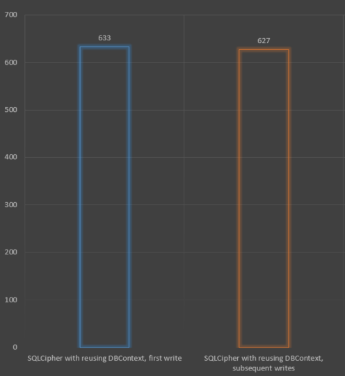
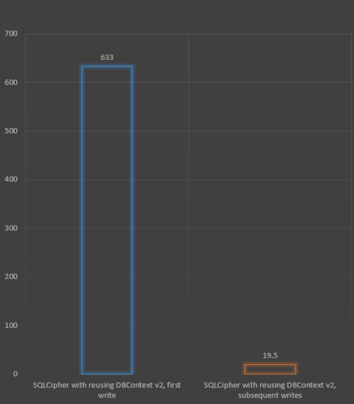
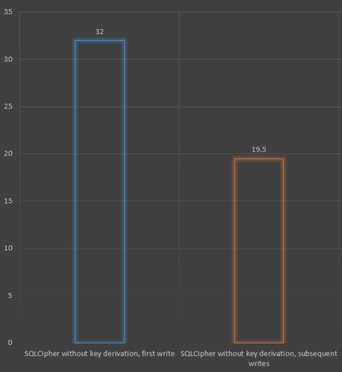
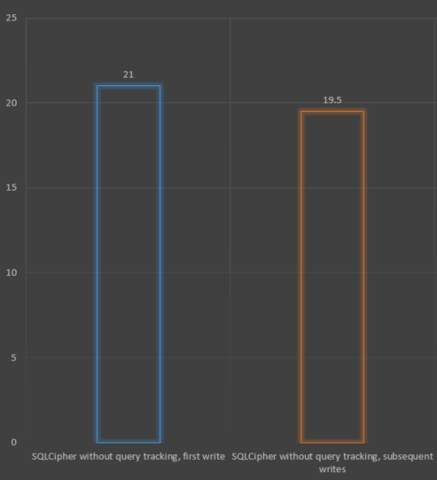
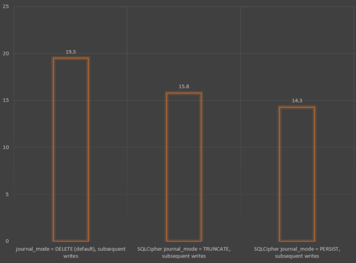

Optimizing SQLCipher performance with C# and Entity Framework Core
Recently, I've had to implement a secure storage service in a .NET5 C# application, and ended up selecting SQLCipher as the encrypted store for the data.
During the work, I found a lot of misleading advice online which boils down to "SQLCipher with Entity Framework is too slow to be useable", so this blog post is here to alleviate these claims. This blog post will be a high-level walk-through on how I tuned its performance under Entity Framework Core from "unuseable" to "this will work well for us".
So what's SQLCipher, and why would you use it? One can think of SQLCipher as "SQLite, but with encryption". Their pitch is "Open-source extension to SQLite; Transparent, 256-bit AES encryption". Since using Entity Framework Core with SQLite is a fairly standard practice for local storage in apps, this seemed like an easy choice to make.
Naive Implementation
Setting up a project to try the SQLCipher/EF Core combination was straight-forward:
Let's modify the OnConfiguring method to include the password in the connection string, and give it a quick performance test.
protected override void OnConfiguring(DbContextOptionsBuilder options)
{
var connString = new SqliteConnectionStringBuilder
{
DataSource = "blogging.db",
Password = "password1",
}.ToString();
options.UseSqlite(connString);
}
To keep this article somewhat short, I'll be looking at two metrics:
- Time to write a new object to the DB without a pre-existing DB connection - further called a "first write"
- and time to write a new object to the DB with a pre-existing DB connection - further called a "subsequent write".
So let's do a quick write-performance check:
for (var j = 0; j < innerIterations; j++)
{
using (var db = new BloggingContext())
{
var blog = new Blog { Url = "http://some.blog.com/post" };
var sw = Stopwatch.StartNew();
db.Blogs.Add(blog);
db.SaveChanges();
sw.Stop();
}
}
Note that for simplicity some code has not been included in the listings, e.g. the code to warm-up the app and DB before first performance runs.

I can see where the complaints about performance come from. 600ms to write a simple object to the database? Users will definitely notice the delay. To be fair, this is our worst-case-on-purpose attempt. We're not reusing the DBContext between calls, so let's fix that first.
Let's modify the loop to reuse the DBContext:
using (var db = new BloggingContext())
{
for (var j = 0; j < innerIterations; j++)
{
var blog = new Blog { Url = "http://some.blog.com/post" };
var sw = Stopwatch.StartNew();
db.Blogs.Add(blog);
db.SaveChanges();
sw.Stop();
}
}

I would have expected to see an improvement in the "subsequent writes", but that's not the case. Time to figure out what's happening behind the scenes.
Step 1: We need to know what's happening
Without seeing what queries EF Core is firing at SQLCipher (and their timings), we're flying blind. First step is to enable debugging in EF Core.
Replace
options.UseSqlite(c);
with
options.
LogTo(c => Debug.WriteLine(c)).
EnableSensitiveDataLogging().
UseSqlite(c);
Now our debug spew shows us in good detail:
- what EF Core is doing,
- what queries are fired at SQLCipher,
- how much time each query takes.
dbug: 4/11/2021 10:29:50.853 RelationalEventId.ConnectionOpening[20000] (Microsoft.EntityFrameworkCore.Database.Connection)
Opening connection to database 'main' on server 'blogging.db'.
dbug: 4/11/2021 10:29:51.439 RelationalEventId.ConnectionOpened[20001] (Microsoft.EntityFrameworkCore.Database.Connection)
Opened connection to database 'main' on server 'blogging.db'.
dbug: 4/11/2021 10:29:51.443 RelationalEventId.TransactionStarting[20209] (Microsoft.EntityFrameworkCore.Database.Transaction)
Beginning transaction with isolation level 'Unspecified'.
...
dbug: 4/11/2021 10:29:51.568 RelationalEventId.TransactionCommitted[20202] (Microsoft.EntityFrameworkCore.Database.Transaction)
Committed transaction.
dbug: 4/11/2021 10:29:51.571 RelationalEventId.ConnectionClosing[20002] (Microsoft.EntityFrameworkCore.Database.Connection)
Closing connection to database 'main' on server 'blogging.db'.
dbug: 4/11/2021 10:29:51.585 RelationalEventId.ConnectionClosed[20003] (Microsoft.EntityFrameworkCore.Database.Connection)
Closed connection to database 'main' on server 'blogging.db'.
dbug: 4/11/2021 10:29:51.587 RelationalEventId.TransactionDisposed[20204] (Microsoft.EntityFrameworkCore.Database.Transaction)
Disposing transaction.
...
dbug: 4/11/2021 10:29:51.635 RelationalEventId.ConnectionOpening[20000] (Microsoft.EntityFrameworkCore.Database.Connection)
Opening connection to database 'main' on server 'blogging.db'.
dbug: 4/11/2021 10:29:52.197 RelationalEventId.ConnectionOpened[20001] (Microsoft.EntityFrameworkCore.Database.Connection)
Opened connection to database 'main' on server 'blogging.db'.
...
dbug: 4/11/2021 10:29:52.229 RelationalEventId.TransactionCommitted[20202] (Microsoft.EntityFrameworkCore.Database.Transaction)
Committed transaction.
dbug: 4/11/2021 10:29:52.231 RelationalEventId.ConnectionClosing[20002] (Microsoft.EntityFrameworkCore.Database.Connection)
Closing connection to database 'main' on server 'blogging.db'.
dbug: 4/11/2021 10:29:52.238 RelationalEventId.ConnectionClosed[20003] (Microsoft.EntityFrameworkCore.Database.Connection)
Closed connection to database 'main' on server 'logging.db'.
dbug: 4/11/2021 10:29:52.240 RelationalEventId.TransactionDisposed[20204] (Microsoft.EntityFrameworkCore.Database.Transaction)
Disposing transaction.
A couple insights here:
ConnectionOpeninghappens at 10:29:50.853,ConnectionOpenedat 10:29:51.439, nearly 600 ms to open a connection- Despite us reusing the DB context, the connection is closed after the first write, and re-opened on the second write, incurring another delay of nearly 600 ms
Step 2: Keep DB Context's Connection Alive
First, let's solve the second issue: connection being closed, despite us keeping the DB context. The way to force EF Core to keep the connection open is to open the connection manually in OnConfiguring:
protected override void OnConfiguring(DbContextOptionsBuilder options)
{
var connString = new SqliteConnectionStringBuilder
{
DataSource = "blogging.db",
Password = "password1",
}.ToString();
var c = new SqliteConnection(connString);
c.Open();
options.UseSqlite(c);
}
We can verify in the debug spew that EF Core no longer closes the connection, and re-run the perf test:

The sub-sequent writes no longer incur the connection delay, and are sub-20ms now.
Step 3: Reduce The First-Connection Latency
SQLCipher uses 256-bit AES encryption. You might have noticed we're not giving it a 256-bit key, but a shorter ASCII password instead. This means SQLCipher needs to generate an AES key from the given password (i.e. key derivation), which is computationally intensive, and takes up a good chunk of the 600 ms latency we see.
However, SQLCipher also allows us to provide a 256-bit AES key which does not require the key derivation step, and can be provided as a PRAGMA statement:
protected override void OnConfiguring(DbContextOptionsBuilder options)
{
var connString = new SqliteConnectionStringBuilder
{
DataSource = "blogging.db",
}.ToString();
var c = new SqliteConnection(connString);
c.Open();
var keyString = "5A7134743777217A25432A462D4A614E645267556B586E3272357538782F413F";
using (var command = c.CreateCommand())
{
command.CommandText = $"PRAGMA key = \"x'{keyString}'\";";
command.ExecuteNonQuery();
}
options.UseSqlite(c);
}
And updated performance test:

Step 4: Disable Change Tracking, If Not Using It
In certain situations, we can disable EF Core's change tracking, as per documentation here:
Disabling change tracking is useful for read-only scenarios because it avoids the overhead of setting up change tracking for each entity instance. You should not disable change tracking if you want to manipulate entity instances and persist those changes to the database using SaveChanges().
Our application's storage layer does its own change tracking, so we do not need to rely on EF Core for it. If you find yourself in a similar situation, shave off some startup overhead by disabling tracking in the DB context, where approppriate:
using (var db = new BloggingContext())
{
db.ChangeTracker.QueryTrackingBehavior = QueryTrackingBehavior.NoTracking;
...
}

Step 5: Further Tuning Of SQLite/SQLCipher
For non-EF Core specific SQLite/SQLCipher tuning I recommend Increasing SQLite Performance article.
The safest performance improvements you can do is changing the JOURNAL_MODE to TRUNCATE or PERSIST. TRUNCATE will truncate the log file to 0 size after a transaction is committed, rather than deleting it. PERSIST will fill the log file header with zeros, rather than deleting it. I found that these are quicker on a Windows system than the default DELETE mode.
To try these out, add another command in your OnConfiguring method, e.g.:
protected override void OnConfiguring(DbContextOptionsBuilder options)
{
var connString = new SqliteConnectionStringBuilder
{
DataSource = "blogging.db",
}.ToString();
var c = new SqliteConnection(connString);
c.Open();
var keyString = "5A7134743777217A25432A462D4A614E645267556B586E3272357538782F413F";
using (var command = c.CreateCommand())
{
command.CommandText = $"PRAGMA key = \"x'{keyString}'\";";
command.ExecuteNonQuery();
}
using (var command = c.CreateCommand())
{
command.CommandText = $"PRAGMA journal_mode = PERSIST;";
command.ExecuteNonQuery();
}
options.UseSqlite(c);
}
Here's the comparison of default DELETE versus TRUNCATE and PERSIST:

There are further performance tuning options given in the article above, but care needs to be taken when applying them. E.g. setting JOURNAL_MODE to MEMORY gets the writes into sub-1ms performance, at the expense of DB intergrity in the case of the crash of the application or system.